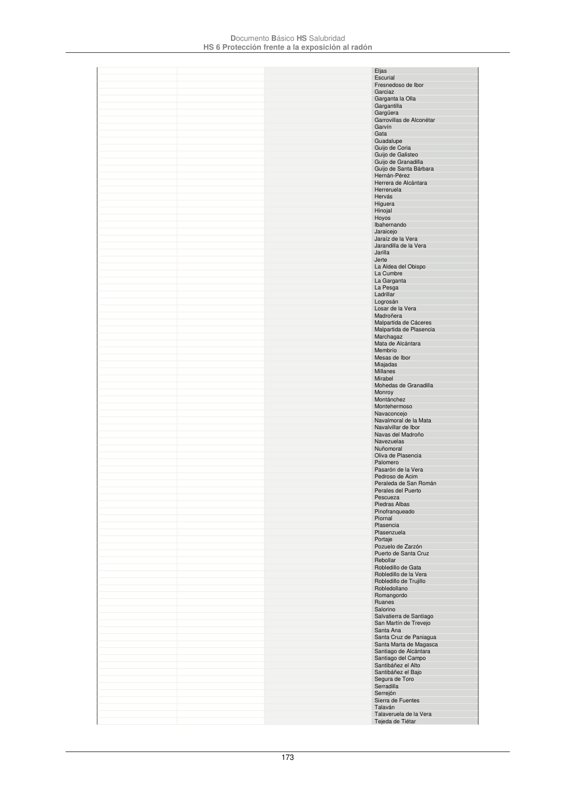

DB-HS Salubridad · edición 2022-06-14 · capa oficial
Documento DB-HS-oficial · SHA-256 del PDF 68df3caacc95f71aee2ec1ba7b2c65ae66155c21e3a8785521b8fdd4fd640d3b
Página física 173 de 184.
Copia fiel del PDF fuente · Fuente oficial
Ficha de la disposición en la fuente oficial
Formato: Texto de la página (Markdown)
Documento Básico HS Salubridad HS 6 Protección frente a la exposición al radón 173 Eljas Escurial Fresnedoso de Ibor Garciaz Garganta la Olla Gargantilla Gargüera Garrovillas de Alconétar Garvín Gata Guadalupe Guijo de Coria Guijo de Galisteo Guijo de Granadilla Guijo de Santa Bárbara Hernán-Pérez Herrera de Alcántara Herreruela Hervás Higuera Hinojal Hoyos Ibahernando Jaraicejo Jaraíz de la Vera Jarandilla de la Vera Jarilla Jerte La Aldea del Obispo La Cumbre La Garganta La Pesga Ladrillar Logrosán Losar de la Vera Madroñera Malpartida de Cáceres Malpartida de Plasencia Marchagaz Mata de Alcántara Membrío Mesas de Ibor Miajadas Millanes Mirabel Mohedas de Granadilla Monroy Montánchez Montehermoso Navaconcejo Navalmoral de la Mata Navalvillar de Ibor Navas del Madroño Navezuelas Nuñomoral Oliva de Plasencia Palomero Pasarón de la Vera Pedroso de Acim Peraleda de San Román Perales del Puerto Pescueza Piedras Albas Pinofranqueado Piornal Plasencia Plasenzuela Portaje Pozuelo de Zarzón Puerto de Santa Cruz Rebollar Robledillo de Gata Robledillo de la Vera Robledillo de Trujillo Robledollano Romangordo Ruanes Salorino Salvatierra de Santiago San Martín de Trevejo Santa Ana Santa Cruz de Paniagua Santa Marta de Magasca Santiago de Alcántara Santiago del Campo Santibáñez el Alto Santibáñez el Bajo Segura de Toro Serradilla Serrejón Sierra de Fuentes Talaván Talaveruela de la Vera Tejeda de Tiétar

Datos candidatos: compruebe celdas y notas en el PDF.